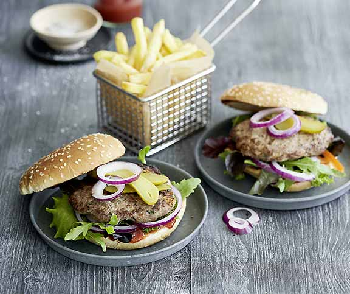

Notre burger de viande hachée

Les hamburgers préparés soi-même plaisent à tout le monde et peuvent être également préparés sur un gril. Chacun peut les garnir selon ses propres désirs.
Ingrédients
- 1 oignon
- 2 gousses d’ail
- 1 bouquet de persil plat
- 50 g de pain
- 1 c.s. de beurre
- 1 œuf frais
- 800 g de viande hachée (bœuf et porc)
- 1 c.c. de sauce Worcestershire
- 1 c.c. de paprika
- 1.5 c.c. de sel
- un peu de poivre